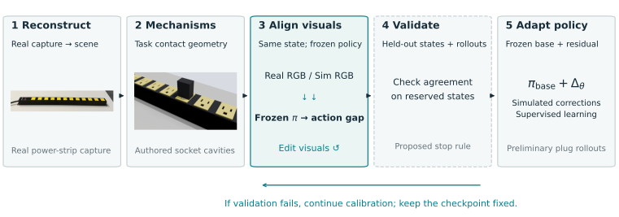
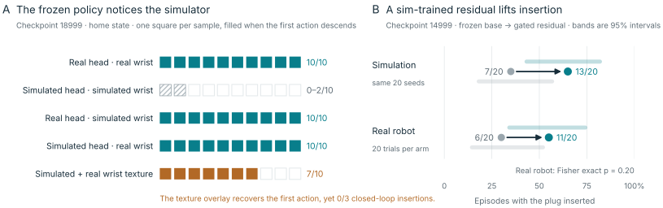
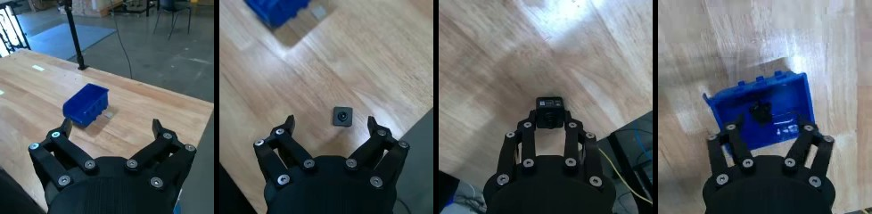
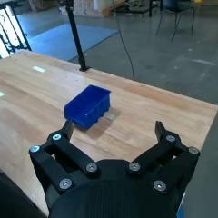
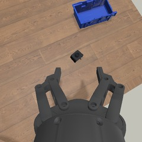

Reconstruct + complete
Recover appearance and layout, then supply task mechanisms such as socket cavities, box flaps and threads. Preserve which properties were reconstructed, measured, assumed or edited.
Does a reconstructed scene look right to the policy?
We investigate frozen robot checkpoints as behavioral probes of visual mismatch. Functional assets establish the interactions; real data and policy responses guide calibration; a fixed simulation then supports residual learning.
Working project page. Author details and final publication URL are pending. This is not an accepted-paper announcement.

Method
Recover appearance and layout, then supply task mechanisms such as socket cavities, box flaps and threads. Preserve which properties were reconstructed, measured, assumed or edited.
Compare one checkpoint on real and simulated images at corresponding states. Hold the prompt, history and proprioception consistent. Use response differences to guide visual edits.
Check agreement beyond the calibration frames, then freeze the simulator. Train a small correction over the base policy. Full behavioral convergence and hardware transfer remain to be evaluated.
Evidence / visual calibration
In recorded home-state probes, checkpoint 18999 descends in 10/10 samples with real images, but only 0–2/10 with simulated inputs. Replacing either simulated camera with a real view restores 10/10. These interventions reveal sensitivity; they do not isolate one unique cause.

The texture overlay raises initial descent to 7/10, but the associated rollout run still produces 0/3 insertions. Matching an initial response does not establish closed-loop fidelity.
Compare the initial functional reconstruction, image/geometry-only alignment, and alignment with policy feedback. Use reserved paired states across approach, grasp, transport and insertion, then frozen-policy rollouts. The current work motivates this protocol; it has not completed this controlled ablation.
For stochastic policies, pair sampling noise or compare repeated response distributions. Keep visual changes separate from controller and mechanism changes.
01 / Objects
Real source references beside the reconstructed objects and their completed mechanisms. How the reconstruction harness accepts or rejects a scene, and how hinges, sockets and threads are added, is on the harness page.
Real / source photograph

Simulation / robot-free insertion
Download videoReconstructed appearance with authored socket cavities. The three-prong probe seats to 15.9 mm and holds for two seconds; 90°/180° rotations and a 4 mm offset are rejected.
New recording of the delivered three-prong mechanism: aligned insertion, hold, and extraction under applied force. No robot or learned policy. Measurements above are from the saved test report. View the reconstructed socket geometry.
Real / source photograph

Simulation / thread mechanism
Download videoA reconstructed jar completed with procedural thread and neck geometry.
Hidden contact geometry is authored. The fixture holds the jar; transport and reseating are prescribed. This is a mechanism demonstration without a robot. View the reconstructed asset.
Real / source photograph

Simulation / corrected object

Articulated lid and approximately 120 mm side flaps. A manually initialized folded fit holds for 8 seconds with a 0.046 mm front gap.
Corrected object geometry. The robot folding video is in the interaction section below. Rigid-panel approximation. Corrected geometry / manually initialized folded fit.

Interactive reconstruction, not a physics simulation. The GLB contains the complete reconstructed environment: bench, camera-shaped object, and bin. Robot models are omitted; the preview image includes the rig for context.
Download scene GLBReal / input photograph

Simulation / camera tour
Download camera tourInput photograph beside the reconstructed scene viewed from multiple angles.
Camera-tour visualization; no manipulation or physical validation is implied.

Real / input photograph

Simulation / settled scene

One phone photograph reconstructed into five simulated rigid bodies: a red pen, an ibuprofen bottle, a clear ribbed cup, a black pen and a keyboard. Each has a generated mesh, a fitted pose and convex collision parts, and the scene settles under physics in 142 steps.
Preview, not accepted by the real2sim audit: a name plate was removed by hand after stage 10, and stages 11–12 ran outside the harness. The pens needed added rolling friction and damping to rest in PyBullet. The cup is clear in the photograph but opaque in the mesh, and masses and friction are VLM estimates, not measurements.
Download desk scene GLBDownload asset provenance and task notes
02 / Robot interactions
Pickup, box folding, and plug insertion rollouts, and bimanual jar opening.
Real / wrist camera, pick and place
Download videoSimulation / learned residual, wrist + overview
Download videoReal pick and place into the bin, beside the learned behavioral-cloning residual completing validation grasp seed 10000 in simulation.
The real clip is a wrist-camera reference recording from a different trial; a person sets the object down in the first seconds. The simulation clip plays at 2× speed and starts from a saved grasp state, not home. The training grasp start faults; both learned placement-only tests time out.
Real / demonstration 0133
Download videoSimulation / scripted oracle
Download videoReal wrist-camera demonstration beside the full scripted held-down box-folding sequence, with overview and wrist views.
Scripted oracle demonstration; different trials, not synchronized replay. This clip is separate from the earlier learned-policy evaluation, which recorded 0/12 closures (10 physics faults, 2 timeouts).
Real / teleoperated insertion, base + wrist
Download videoSimulation / learned residual
Download videoA real teleoperated insertion beside a learned-residual rollout in simulation.
The real clip is teleoperated demonstration episode 100, trimmed once the plug is seated and released; it is not a policy rollout. The simulation clip is one selected start, recorded at one frame per simulated second and played at 3× speed. Base versus residual counts are in the residual section.
Real / bimanual opening, wrist cameras
Download videoSimulation / bimanual scripted oracle
Download videoBimanual jar opening: the left arm holds the jar while the right arm turns the lid. Overview and wrist views show the scripted sequence.
Real wrist-camera recording beside the scripted simulation oracle: different trials, not synchronized replay. The simulation is a scripted oracle, not a learned-policy result. The separate object-only thread test remains in the objects carousel above.
Evidence / residual learning
One recipe, applied to two tasks. A frozen π0.5 checkpoint supplies the base action. In simulation, a privileged oracle corrects the base policy where it fails, and a small residual head learns those corrections. At test time the head sees policy features and robot state, not the object pose.
Run the real-trained π0.5 checkpoint in the simulated workcell exactly as deployed. Its weights never change.
Vary the start state. When the base policy stalls or misses, an oracle that reads the true object state takes over and completes the task.
Supervised regression of the oracle’s correction from frozen policy features, the base action and robot state. Corrections are clipped; there is no RL objective.
| Task | Criterion | Frozen base | With residual | Comparison scope |
|---|---|---|---|---|
| Camera pickup | Picked and held | 2 / 24 | 14 / 24 | 24 unseen placements; no placement the base held was lost |
| Camera pickup | Lifted at all | 2 / 24 | 19 / 24 | Same 24 placements |
| Plug insertion | Inserted at some point | 7 / 20 | 13 / 20 | Same 20 seeds; gated head (gateless: 11 / 20) |
| Plug insertion Real robot | Insertion, gated residual | 6 / 20 | 11 / 20 | 20 real trials per arm; Fisher exact p = 0.20 |
The tasks differ in checkpoint, scene, success criterion and sample size, so the rows are not pooled. Simulation rows are development results in MuJoCo. The real-robot plug row is 20 trials per arm: 95% Wilson intervals of 15–52% and 34–74% overlap, so the gain is promising but not yet statistically established. Gated versus gateless (13 vs 11) is within run-to-run noise observed with identical seeds.
Task A / Camera pickup · π0.5 camera_pick, step 30,000
π0.5 was fine-tuned on 355 GRUMI teleoperation demonstrations on a Flexiv Rizon 10 (24,704 frames at 10 Hz, one D405 wrist camera). The object was not moved between demonstrations. The policy attempts one grasp, and after a miss it hovers instead of regrasping.
Real / one demonstration, wrist camera

Real wrist

Sim wrist

Oracle data / base hovers, oracle picks
Download videoOracle data / closed on nothing, oracle regrasps
Download videoOracle-collected training episodes. Left: π0.5 never commits; after 18 s the oracle aligns over the object and picks it. Right: π0.5 closes beside the object at 7.3 s; the oracle reopens, realigns and regrasps.
Frozen π0.5 · 2 / 24 held
π0.5 + residual head · 14 / 24 held
heldlifted onlymissedOffset from the object’s position in the demonstrations.
| Placement | Frozen base | With residual |
|---|---|---|
| Near · closer than the demonstrations | 0 / 7 | 3 / 7 |
| Mid · 0 to 6 cm forward | 2 / 10 | 7 / 10 |
| Far · 6 to 9 cm forward | 0 / 7 | 4 / 7 |
Simulation / far placement, seed 60010
Simulation / near placement, seed 60015
One frame per simulated second, played at 3× speed. Same 24 unseen placements and the same π0.5 server for both arms; π0.5 runs synchronously with real-time chunking off. Selected clips illustrate the aggregate above.
| Seed | Forward mm | Sideways mm | Frozen base | With residual |
|---|---|---|---|---|
| 60000 | 40 | 18 | missed | held |
| 60001 | -11 | -32 | missed | lifted only |
| 60002 | 45 | 18 | held | held |
| 60003 | 38 | -2 | missed | missed |
| 60004 | 76 | 8 | missed | held |
| 60005 | -16 | -1 | missed | lifted only |
| 60006 | 50 | 37 | missed | held |
| 60007 | 44 | 5 | missed | held |
| 60008 | 45 | 31 | missed | missed |
| 60009 | -11 | 49 | missed | held |
| 60010 | 86 | 49 | missed | held |
| 60011 | 87 | 6 | missed | held |
| 60012 | 41 | -11 | missed | held |
| 60013 | 37 | -26 | missed | lifted only |
| 60014 | 33 | 48 | held | held |
| 60015 | -15 | -26 | missed | held |
| 60016 | -9 | -36 | missed | missed |
| 60017 | -20 | 29 | missed | lifted only |
| 60018 | 66 | 39 | missed | missed |
| 60019 | -5 | 14 | missed | held |
| 60020 | 84 | -21 | missed | lifted only |
| 60021 | 85 | 11 | missed | missed |
| 60022 | 67 | -4 | missed | held |
| 60023 | 50 | -34 | missed | held |
π0.5 with the residual head on the real GRUMI arm, object moved between trials. Three of five placed. No matched base-policy trials were recorded in this session, so this is a hardware demonstration, not a measured hardware improvement. Download video
Task B / Plug insertion · π0.5 checkpoint 14999
A small MLP reads frozen π0.5 prefix features (4096), frozen DINOv2 features from both cameras and the joint state, and predicts a sideways fingertip shift capped at ±20 mm. A Jacobian step applies the shift to every row of π0.5’s 50-step joint chunk; height, wrist orientation and gripper are never changed. No object or seat pose reaches the head.
On the real robot, the gated residual raised insertion from 6/20 to 11/20 trials. The sim counts are in the summary table above.
One real trial from each condition, shown side by side. They are single illustrations; the counts above are the result.
Rollout videos were recorded at one frame per simulated second and play at 3× speed. The displayed pair illustrates one repaired start, not the average effect. These development results do not establish a statistically reliable improvement.
The completed combined-feature corrector uses 853 training and 88 validation decisions selected from an 80-episode oracle collection. It minimizes supervised residual/gating losses, not an RL objective. Earlier experiments used DAgger; those data should not be assumed to train this specific head.
The current score checks blade-tip XY error below 6 mm and depth above 10 mm. It does not explicitly enforce orientation, maximum penetration, dwell, release stability or electrical contact. Active and interrupted experiments are excluded from the completed table.
Saved matching starts do not establish identical simulator revisions or diffusion-noise streams. A final comparison requires frozen identities, independently generated reset manifests and a validated physical success criterion.
Scope
We demonstrate functional simulation assets, behaviorally consequential visual mismatch, and preliminary residual imitation. The current workflow includes manual or agent-assisted geometry and camera edits. General mechanism discovery, held-out behavioral convergence, and improved real-robot performance are not established. A first real-robot plug comparison (6/20 → 11/20 with the gated residual) is encouraging but small.
The next decisive test is a controlled comparison of visual-only and policy-guided calibration, followed by larger paired base/residual hardware evaluation.
Reconstruction builds on SimFoundry. Related work includes SIMPLER, RialTo, SceneRig, Articulate-Anything, and Object-Centric Residual RL.